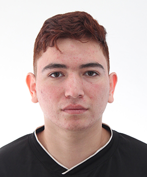

Fotografia:
Nombre: Erick Oswaldo Macias Jiménez
Matricula: 2079424
Conclusión general: Realmente se puede aprender facilmente el progrmar y crear una pagina web en este caso un blog, gracias al profesor se reforzo más el aprendizaje y se recordo lo aprendido. puedo decir que segui aprendiendo más y que pude entender cosas que en su momento no las entendia. creo que el crear este blog me ayudo mucho a seguir mejorando mis conocimientos.